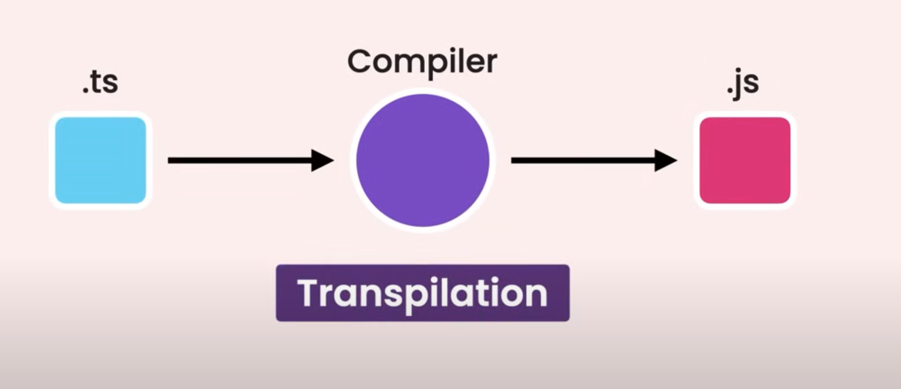
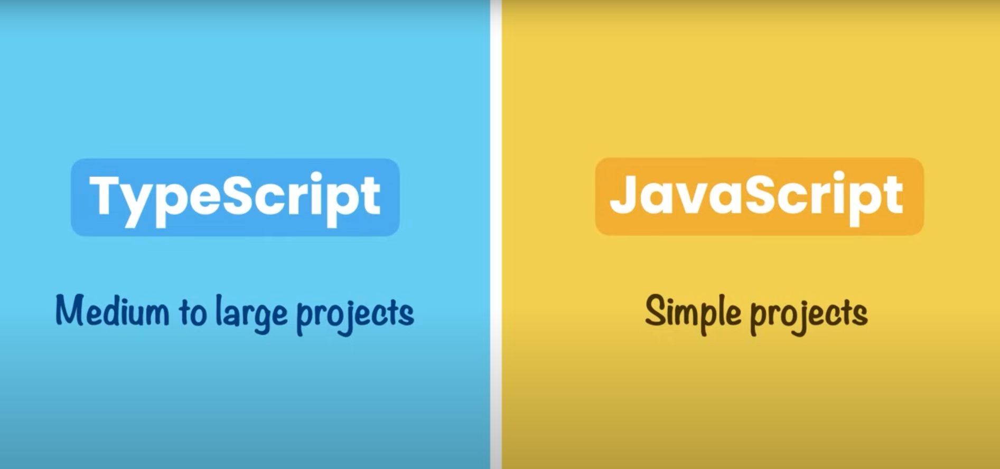

Introduction to TypeScript

What is TypeScript?
TypeScript is a superset of JavaScript that adds static typing to the language. It compiles to plain JavaScript and enhances the development experience.
Key Features
Why Use TypeScript?
Benefits include better code quality, improved maintainability, and enhanced collaboration in larger codebases.
Installation of TypeScript
To install TypeScript globally, use the following command:
npm install -g typescript
Compiling a TypeScript File
To compile a TypeScript file (e.g., index.ts), use the following command:
tsc index.ts
Initializing a TypeScript Configuration
To generate a tsconfig.json file for TypeScript configuration, use:
tsc --init
Compiling All TypeScript Files
To compile all TypeScript files in the project, simply use:
tsc